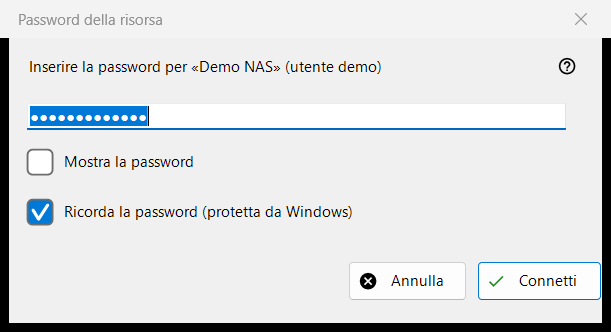
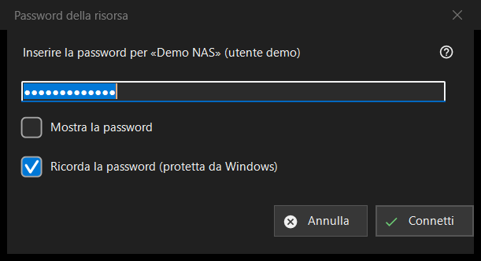

Password della risorsa
Scopo
Chiede la password di un server o di una cartella di rete salvati. Si apre quando apri una risorsa la cui password non è salvata, quando quella salvata viene rifiutata, quando una cartella di destinazione su un server o un'importazione richiede la password, e con il titolo «PIN della risorsa» per una cartella protetta da un PIN.


In questo ordine
- Digita la password; è nascosta e «Mostra la password» la rivela.
- Decidi se lasciare attivo «Ricorda la password (protetta da Windows)».
- Premi «Connetti» (Invio) oppure «Annulla» (Esc) per fermarti.
Gli elementi
La password
La richiesta nomina la risorsa e l'utente. La password viene usata esattamente come digitata, spazi compresi. Un campo vuoto dà «Inserire la password». «Mostra la password» all'inizio è disattivato.
Ricorda la password
La casella è attiva in modo predefinito. Se è attiva, la password viene salvata cifrata da Windows per il tuo account, e solo dopo che una connessione l'ha confermata; se non è attiva, resta in memoria solo per l'esecuzione corrente. La casella è nascosta dove la password viene comunque salvata, ad esempio quando si importa un file di impostazioni, e in modalità PIN.
Una password rifiutata
Se il server ha rifiutato la password precedente, una riga dice «La password non è stata accettata. Inserirla di nuovo.» e la finestra chiede di nuovo.
Modalità PIN
Per una cartella protetta da un PIN il titolo è «PIN della risorsa» e la richiesta chiede il PIN della risorsa indicata. Non c'è nessuna casella per ricordare e un PIN rifiutato dà «PIN rifiutato. Inseriscilo di nuovo.»